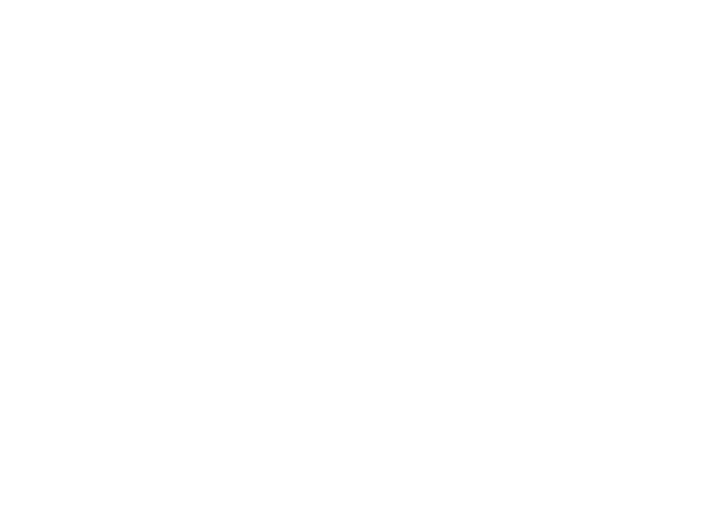
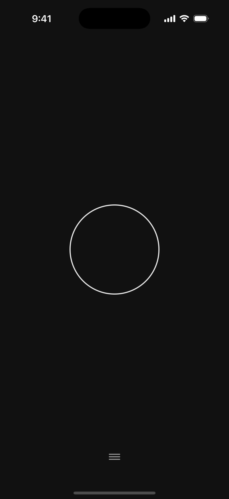
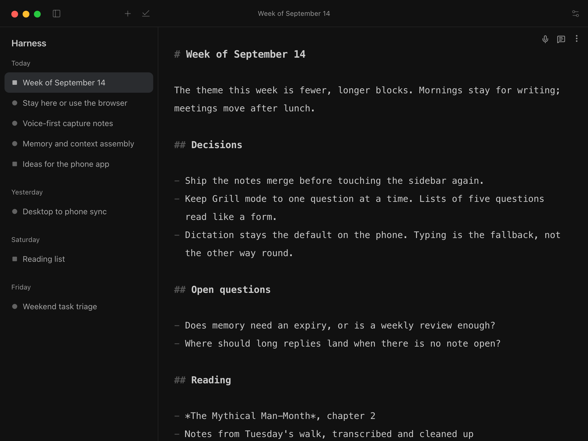
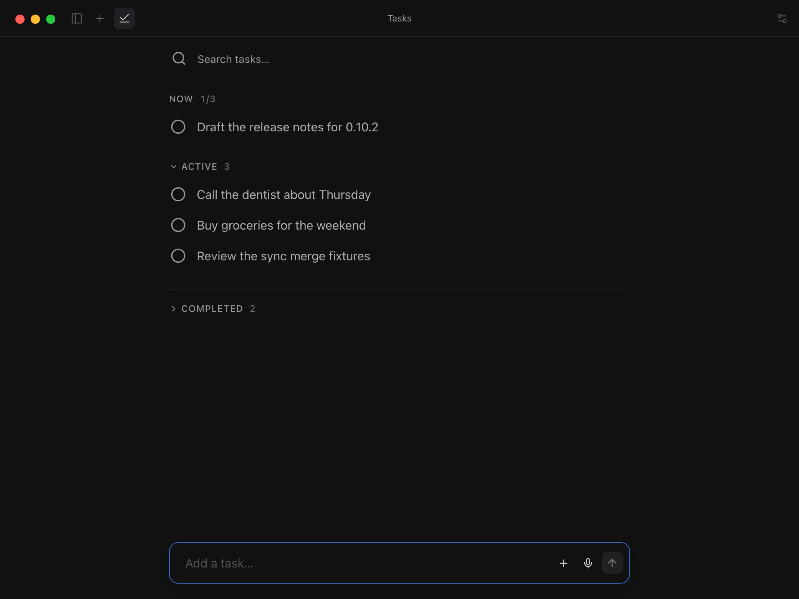

Harness is a Mac app I made for myself. It started as my attempt to improve on Wispr Flow and other voice dictation tools, and it's grown into a full agent harness: chat, notes, tasks, memory, and tools, with an iPhone app for recording away from the desk.
It's my test bed for new ideas and interaction patterns. Just as important, I understand how my data is used, and my thoughts and ideas stay mine, in plain files I can take anywhere.
Speech runs on the Mac. The model is a setting, not a foundation: the notes and conversations are files any model, hosted or local, can read.
If you want to try it, download the latest build (Apple silicon, macOS 12 or later) or read the source.
Plain files
Everything Harness keeps is a file on my Mac, in a format I can open without it. Conversations are JSON, notes are Markdown, and every dictation is the original audio. If I stopped using Harness tomorrow, nothing would be stuck in it.
~/Library/Application Support/Harness/ ├─ Conversations/ │ └─ conv_….json one per conversation ├─ Notes/ │ └─ ….md one per note ├─ Recordings/ │ ├─ dictation_recordings.json │ └─ rec_….wav every take, as recorded └─ .harness/app-state/ ├─ tasks.json └─ user_memory.json what it remembers about me
Dictation
A desktop hotkey for dictating into the computer. Press Fn, talk, press it again, and Apple Speech transcribes the take on the Mac. It works offline and doesn't care if the Wi-Fi is spotty.
It's a full voice recorder, not a walkie-talkie. Push-to-talk trains you into short commands. A recorder that's happy to run for minutes makes room for the long, rambling prompt that actually has the context in it.
The audio is saved before anything else happens, so if transcription or the model fails, the take is still there to run again. After transcription, an editable cleanup pass tidies the text and spells names and terms my way.
On the phone
The iPhone app tries to do one thing well: record. Open it and it's already listening. The home screen is a single circle, and a lock screen widget opens straight into a take.
A finished take is saved as a capture and synced to the Mac, along with chats and tasks, through a Cloudflare R2 bucket that I own. The phone app isn't on the App Store. It builds from the same repo with Xcode.

 0:07.0
0:07.0
Notes
Chat stays short. Longer writing goes into a Markdown note that the model can draft into or suggest edits to, and that I keep editing by hand.

Tasks
Ask in chat or dictate, and tasks land in a plain list. There's nothing to set up and no project hierarchy.
